Árvores regionais
Da Vale das Araucárias Wiki
São seis árvores silvestres adicionais. Elas não substituem carvalho, ácer, pinheiro, mogno nem outras árvores do jogo, e não mexem em mapas ou hitboxes. Desde a versão 1.7.0, as árvores originais do jogo voltaram aos nomes e ícones originais.
Espécies nativas do Sul do Brasil, com sementes, crescimento, torneirinha, coleta e produtos próprios.
Lista de árvores
| Imagem | Árvore | Semente | Crescimento por dia | Torneirinha | Ao sacudir | Madeira |
|---|---|---|---|---|---|---|
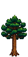 | Araucária Araucaria angustifolia | Pinhão de Araucária | 20% | Breu de Araucária 5 dias | Pinhão de Araucária | Comum |
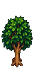 | Erva-mate Ilex paraguariensis | Semente de Erva-mate | 20% | Extrato de Erva-mate 7 dias | Folhas de erva-mate | Comum |
| Bracatinga Mimosa scabrella | Semente de Bracatinga | 25% | Resina de Bracatinga 6 dias | — | Comum | |
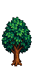 | Imbuia Ocotea porosa | Semente de Imbuia | 15% | Seiva Aromática 9 dias | — | De lei |
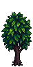 | Canela-preta Ocotea catharinensis | Semente de Canela-preta | 12,5% | Resina de Canela-preta 8 dias | — | De lei |
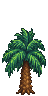 | Butiazeiro Butia eriospatha | Caroço de Butiá | 15% | — | Butiá | Comum |
Sementes e onde encontrar
| Imagem | Semente | Árvore | Robin | Carrinho de Viagem | Coleta | Venda |
|---|---|---|---|---|---|---|
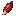 | Pinhão de Araucária | Araucária | 250g | 250g | Montanha: outono (30%) Montanha: inverno (20%) | 80g |
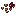 | Semente de Erva-mate | Erva-mate | 100g | 100g | Floresta Cinzaseiva: verão (25%) Floresta Cinzaseiva: outono (15%) | 10g |
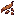 | Semente de Bracatinga | Bracatinga | 75g | 75g | Montanha: verão (25%) | 5g |
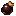 | Semente de Imbuia | Imbuia | 300g | 300g | Bosque Secreto: verão (20%) Bosque Secreto: outono (20%) | 40g |
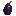 | Semente de Canela-preta | Canela-preta | 350g | 350g | Bosque Secreto: outono (15%) Bosque Secreto: inverno (15%) | 50g |
| Caroço de Butiá | Butiazeiro | 150g | 150g | — | 15g |
No Carrinho de Viagem, cada semente tem 25% de chance de aparecer em cada dia de carrinho, com preço fixo. O Caroço de Butiá também é fabricado a partir do Butiá (receita liberada no nível 1 de coleta).
Produtos
| Imagem | Produto | Árvore | Descrição | Categoria | Venda |
|---|---|---|---|---|---|
| Pinhão de Araucária | Araucária | Semente da araucária. Plante para nascer uma araucária. Cru, não se come. | Coleta | 80g | |
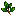 | Folhas de erva-mate | Erva-mate | Folhas da erva-mate, árvore nativa do Sul. Caem ao sacudir uma erva-mate adulta. São a base do chimarrão. | Coleta | 50g |
| Breu de Araucária | Araucária | Resina grossa e perfumada que escorre do tronco da araucária. | Produto de torneirinha | 100g | |
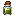 | Extrato de Erva-mate | Erva-mate | Extrato verde e amargo da erva-mate, tirado com a torneirinha. | Produto de torneirinha | 150g |
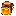 | Resina de Bracatinga | Bracatinga | Resina clara da bracatinga. Boa para envernizar madeira. | Produto de torneirinha | 125g |
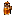 | Seiva Aromática | Imbuia | Seiva perfumada da imbuia, com o mesmo cheiro marcante da madeira. | Produto de torneirinha | 200g |
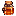 | Resina de Canela-preta | Canela-preta | Resina da canela-preta, com perfume parecido com o de rosas. Muito valorizada. | Produto de torneirinha | 180g |
| Butiá | Butiazeiro | Fruto amarelo, doce e suculento do butiazeiro. Pode ser comido ou virar geleia e vinho. | Fruta | 45g |
Mecânicas
- Todas são árvores silvestres (
Data/WildTrees), plantadas com a semente e com 5 estágios de crescimento. - Nenhuma cresce no inverno; todas crescem sempre com fertilizante de árvore.
- Todas aceitam pica-paus; todas, menos o butiazeiro, podem criar musgo.
- Imbuia e canela-preta dão madeira de lei em vez de madeira comum, com bônus para Silvicultor e Lenhador.
- As árvores cortadas soltam seiva (5 na árvore adulta, 1 no toco).
Árvores retiradas
Retirado Bergamoteira e pitangueira (árvores frutíferas), as antigas versões frutíferas da araucária e da erva-mate e os nomes regionais dos 9 itens das árvores originais existiram em versões anteriores e foram retirados na 1.7.0. Veja Atualizações.